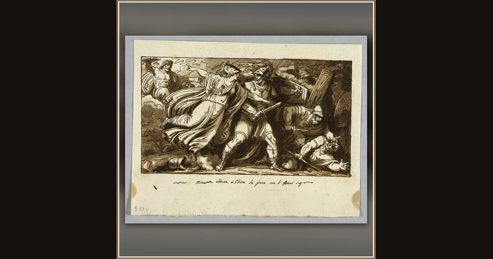

Minerva Orders Ulysses to Make Peace with the Suitors of Penelope
Felice Giani · before 1805 · Cooper Hewitt, Smithsonian Design Museum · New York, USA
In Giani’s swift sketch, the goddess Minerva sweeps in to end the quarrel, commanding peace so Ithaca can finally rest. Explore its place in Book XXIV of the Odyssey.